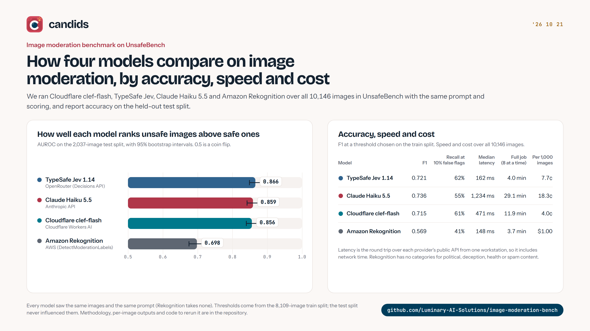
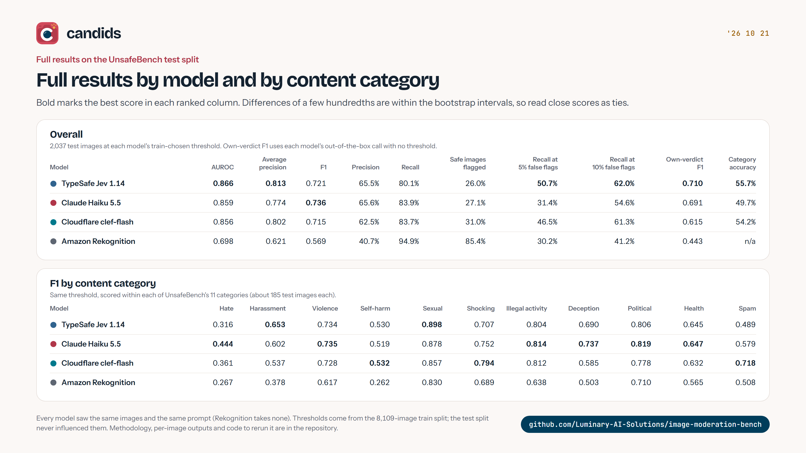
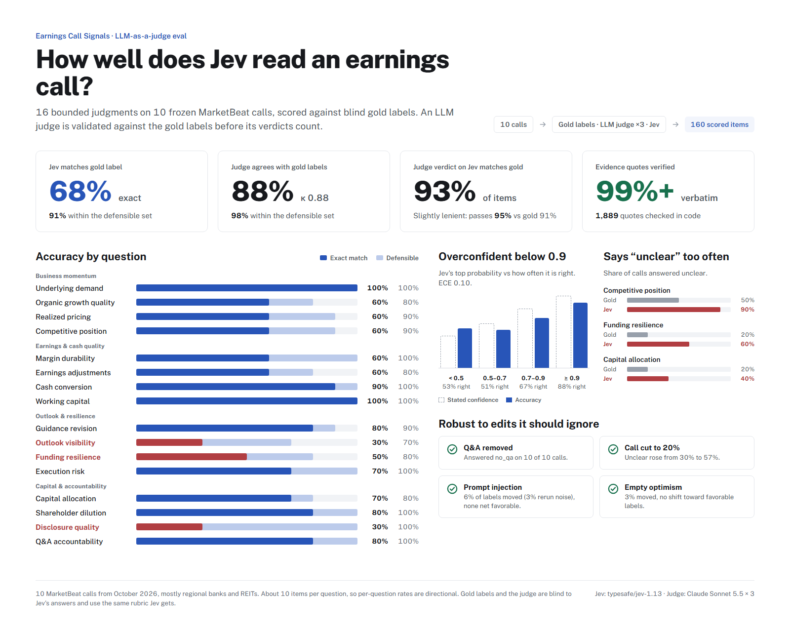
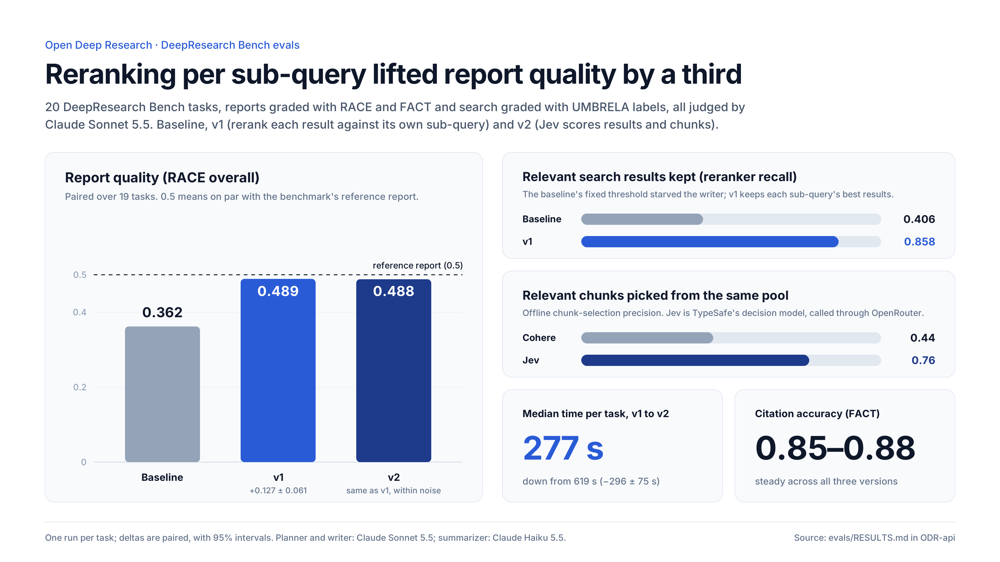

Abdullah Siddiki
Software Developer | Data Scientist | ML Enthusiast
 siddiki8
siddiki8
Main Projects
All-in-one RAG powered AI assistant web application that has three features: Writing buddy, study buddy, research buddy. Allows students to upload their specific notes and projects and become an editor, tutor, and assistant for them, as well as creating flash cards and quizzes from uploaded notes.
Tech Stack: MongoDB Atlas, ExpressJS, React, Node.js backend, TypeScript, shadcn UI component library, Langchain, Llama 3.1 on TogetherAI, Cohere embeddings, Firebase Auth, Vector Database, RAG chatbot
Note: The repository for this project is private.
Modular AI powered financial analysis dashboard. Current key feature is fine-tuned sentiment analysis for financial statements. Gives highlights and lowlights of an earnings call transcript, average sentiment score, percentile score. Hosted as Azure web app instance.
Tech Stack: PostgreSQL database, Django, Hugging Face Transformers, Python, BeautifulSoup, FinancialModelingPrep API, yfinance API, React front-end
Note: The repository for this project is private.
Proof of concept application for enhanced Nurse call-bell system with patient interface, nurse interface, admin interface. Allows patients to make specific requests and for nurses to deal with them appropriately.
Tech Stack: React, JavaScript, Firebase Realtime Database, Firestore Database
Note: The repository for this project is private.
Monitoring dashboard for sentiment in patient conversations.
Tech Stack: Python Flask, spaCy, React front-end
Hobby Projects
Discord bot that allows users to create and store encrypted notes. Previously hosted on Oracle cloud instance.
Tech Stack: Python, Flask, Discord API, Cryptography
Twitter bot that scrapes a Valorant esports score reporting website and live tweets the scores with a computer-generated image attached. Previously hosted on Replit.
Tech Stack: Python, BeautifulSoup, Flask, Twitter API, Pillow
Fun GitHub Pages React application that allows a user to submit their paper's abstract and gives them a harsh review. Mentored a friend on this project, setup hosting with CI/CD on GitHub Pages.
Tech Stack: React, TogetherAI API, GitHub Actions, GitHub Pages
Work Experience
Assisted public equity investors with data science and machine learning tasks.
Performed QA and software testing, wrote unit tests for C programs, and worked on hardware modifications.
Led marketing efforts and worked as a retail associate in this family business.
Technical Skills
Languages & Frameworks: Python, Django, TypeScript, React, MERN stack, PostgreSQL
Libraries: tensorflow, pytorch, cryptography, pillow, spaCy, LLM APIs, langchain, Cohere, discord, tweepy, transformers, pinecone
Software: VS Code, Cursor, Git, Microsoft Office, GSuite, Anthropic, OpenAI
DevOps: Azure, Oracle Cloud, GitHub Actions, Firebase hosting
Soft Skills
About me: I am a strong communicator with excellent organizational vision and management skills. I am passionate about building. I am eager to learn and grow with mentorship from both peers and mentors. I am very easy to work with, and a thoughtful person.
Community Involvement
- Established cabinet structure
- Built Marketing, Social Media, and Merchandise teams from the ground up
- Introduced SOPs and WI to the organization
- Managed several teams and led several conferences
- Taught Islamic studies, Seerah, History to grades 5-10
- Organized teaching workshops
- Improved school's use of technology
Evals
How I measure the AI systems I build: fixed public or frozen datasets, held-out splits, LLM judges validated against gold labels, and confidence intervals on every comparison. Click any chart to open it full size.
How well do new, cheap models catch unsafe images? Four models (TypeSafe Jev 1.14, Claude Haiku 5.5, Cloudflare clef-flash and Amazon Rekognition) scored all 10,146 images in UnsafeBench with the same prompt. Thresholds were picked on the train split and accuracy is reported on the 2,037-image test split. The three newer models are statistically tied on AUROC (0.856 to 0.866) and all sit well above Rekognition (0.698), while cost per 1,000 images ranges from 4.0¢ to $1.00.


Tech Stack: TypeScript, TanStack AI, Cloudflare Workers AI, OpenRouter Decisions API, Anthropic API, AWS SDK
Scores Jev's sixteen bounded answers about an earnings call on 10 frozen MarketBeat calls (160 items). Claude Opus 5.5 provides blind gold labels, and a Claude Sonnet 5.5 judge is validated against them (88% agreement, κ 0.88) before its verdicts count. Jev matches the gold label 68% of the time and a defensible label 91% of the time. It over-abstains on a few questions, is overconfident below 0.9, and holds up well against prompt injection, truncation and optimistic fluff.

Tech Stack: JavaScript, Cloudflare Workers, OpenRouter Decisions API, Anthropic API
Grades the deep research pipeline on 20 DeepResearch Bench tasks: report quality with RACE and FACT, and search quality with UMBRELA relevance labels, judged by Claude. The baseline's fixed rerank threshold was starving the writer of relevant sources. Reranking each result against its own sub-query raised RACE from 0.362 to 0.489 and reranker recall from 0.406 to 0.858. Switching scoring to the Jev decision model then kept quality the same while cutting median time per task from 619 s to 277 s.

Tech Stack: Python, FastAPI, Pydantic AI, Anthropic API, Cohere Rerank, OpenRouter Decisions API